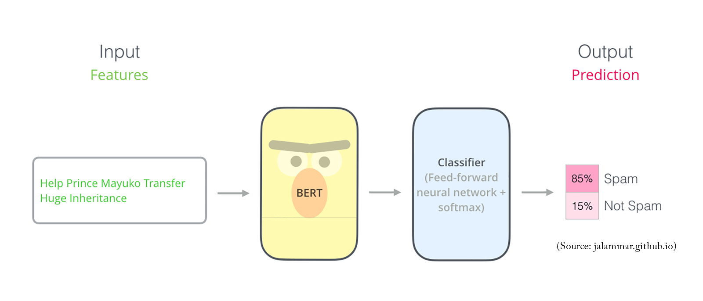
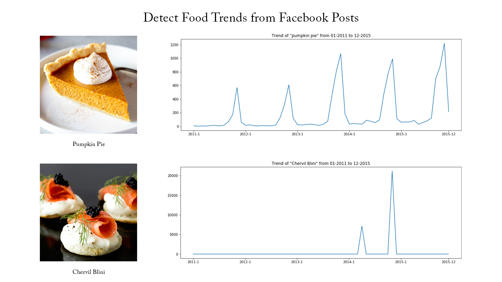
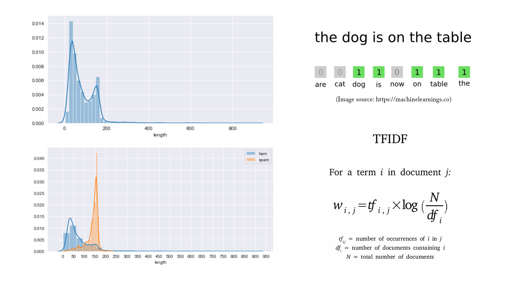

Bích Trâm
I am a third-year student majoring
in Information Technology at Saigon
University, Ho Chi Minh City.
in Information Technology at Saigon
University, Ho Chi Minh City.
Portfolio
Detect Non-negative Airline Tweets: BERT for Sentiment Analysis
The release of Google's BERT is described as the beginning of a new era in NLP. In this notebook I'll use the
HuggingFace's transformers library to fine-tune pretrained BERT model for a classification task. Then I will compare
BERT's performance with a baseline model, in which I use a TF-IDF vectorizer and a Naive Bayes classifier. The transformers
library helps us quickly and efficiently fine-tune the state-of-the-art BERT model and yield an accuracy rate 10% higher than the baseline model.

Detect Food Trends from Facebook Posts: Co-occurence Matrix, Lift and PPMI

First I build co-occurence matrices of ingredients from Facebook posts from 2011 to 2015. Then, to identify interesting
and rare ingredient combinations that occur more than by chance, I calculate Lift and PPMI metrics. Lastly, I plot time-series
data of identified trends to validate my findings. Interesting food trends have emerged from this analysis.

Detect Spam Messages: TF-IDF and Naive Bayes Classifier
In order to predict whether a message is spam, first I vectorized text messages into a format that machine
learning algorithms can understand using Bag-of-Word and TF-IDF. Then I trained a machine learning model to
learn to discriminate between normal and spam messages. Finally, with the trained model, I classified unlabel
messages into normal or spam.

Predict Breast Cancer with RF, PCA and SVM using Python
In this project I am going to perform comprehensive EDA on the breast cancer dataset, then transform the data
using Principal Components Analysis (PCA) and use Support Vector Machine (SVM) model to predict whether a
patient has breast cancer.

Business Analytics Conference 2018: How is NYC’s Government Using Money?
In three-month research and a two-day hackathon, I led a team of four students to discover insights from 6 million
records of NYC and Boston government spending data sets and won runner-up prize for the best research poster out of
18 participating colleges.